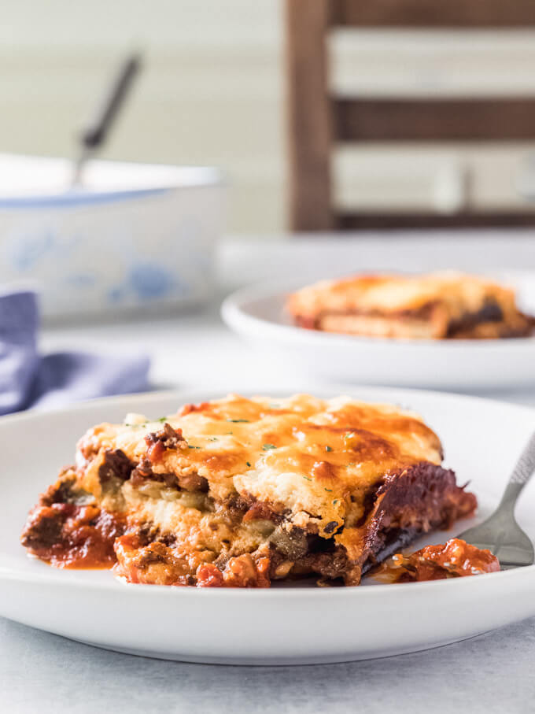

Zucchini Lasagna

None of the carbs, but all of the goodness.
Ingredients
- 1 1/2 large zucchini
- 2 tbsp olive oil
- 1 pound of mushrooms, rinsed and wiped
- 1 1/2 cups marinara sauce
- 2 tsp salt
- 3 cloves of garlic, sliced
- 1 tsp dried basil
- 1 (8 oz) container ricotta cheese
- 1 large egg
- 2 cups shredded mozzarella cheese
- 3 tbsp of nutritional yeast
Steps
- Preheat oven to 400 degrees F (~ 200 degrees C)
- Thinly slice zucchini into slices, salt and use paper towel to remove excess moisture
- Grease two large cookie sheets with 1 tbsp of olive oil and lay slices of zucchini on sheets
- Bake zucchini slices in oven for 6-8 minutes per side, and then flip and bake for an additional 6-8 minutes. Set aside.
- Cut mushrooms and garlic into small pieces and put them in a saute pan
- Add olive oil to mushroom and garlic and saute until softened
- Add 1 cup of marinara sauce and dried basil to mushroom and garlic
- Stir and simmer until sauce thickens
- In a bowl, combine ricotta cheese, egg, mozzarella cheese and nutritional yeast
- Spread 1/2 cup of marinara sauce to bottom of lasagna pan
- Add slices of zucchini
- Spread ricotta mixture on top along with the marinara and mushroom mixture
- Repeat layers and top with remaining mozzarella and nutritional yeast
- Bake covered for 30 minutes and 10 minutes uncovered
- Allow to cool and enjoy!